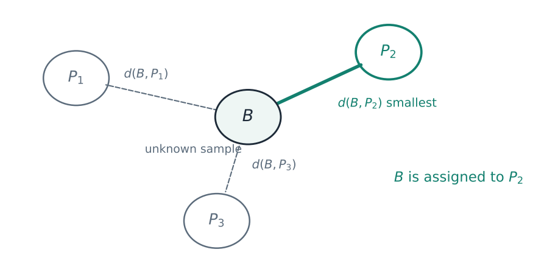
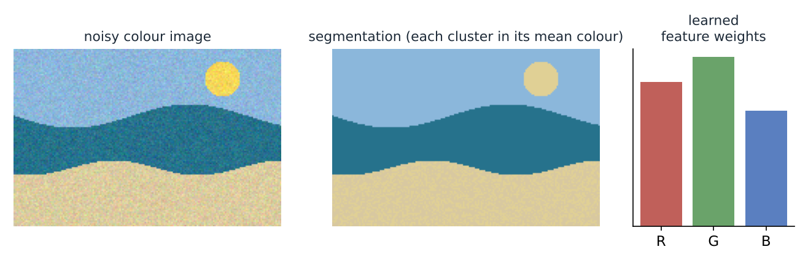

Mathematical Foundations of Machine Learning under Uncertainty
Motivation
Much of the data a learning system sees is not clean or certain. A patient's symptoms only partly match a disease, an expert can be unsure between two ratings, and a pixel can lie on the border between two regions of an image. Fuzzy sets describe this kind of information by giving each element a degree of membership. Newer extensions go further. Picture fuzzy sets add a degree of neutrality, Fermatean fuzzy sets allow a wider range of membership and non-membership values, and complex-valued versions add a second, periodic component.
Almost every method that works with such data, whether for classification, clustering or decision making, depends on one basic question: how different are two uncertain objects? When I started this work, many of these newer set types had no good answer. Some had no distance measure at all. The measures that did exist sometimes gave counter-intuitive results, for example calling two clearly different sets identical, or did not satisfy the basic properties a distance should have.
What I contributed

My work built these measures and then put them to use.
- Distances for complex picture fuzzy sets. Building on the Hellinger distance, I proposed a family of distance measures for complex picture fuzzy sets and proved that they are bounded, non-degenerate and symmetric, and that they satisfy the triangle inequality.
- α-divergences for picture and interval-valued picture fuzzy sets. I proposed α-divergence measures for both settings, proved their basic properties and showed how several special cases relate to known divergences.
- A unified divergence operator for Fermatean fuzzy sets. This is one parametric operator that models membership, non-membership and hesitation together. The Jensen–Shannon divergence, the Hellinger distance and the χ²-divergence all appear as special cases.
- Distances for complex Fermatean fuzzy sets. I proposed new distance measures for this setting.
- Feature-weighted clustering. These are c-means type algorithms that learn a weight for each feature automatically, so that less informative features count less.
In each paper I compared the new measures with existing ones on numerical examples, focusing on the cases where older measures fail to tell objects apart.
Applications
A measure is only useful if it leads to better decisions, so I tested each one on concrete tasks. The figures below illustrate how each task uses a distance or divergence. They are schematic sketches, not results copied from the papers.
Pattern recognition
Each known pattern is described by a fuzzy set. A new, unlabelled sample is assigned to the pattern it is closest to. A good measure has to separate patterns that are similar but not the same, which is exactly where several earlier measures broke down.

Medical diagnosis
Patients and diseases are both described by their symptoms, with degrees of presence, absence and uncertainty. The distance from each patient to each disease gives a diagnosis: the disease with the smallest distance.

Clustering
With a reliable divergence between every pair of objects, hierarchical clustering merges the most similar objects first. Cutting the tree at a chosen level gives the clusters.

Colour image segmentation
Segmentation is clustering of pixels. In a colour image, some colour channels separate regions better than others. The feature-weighted c-means methods learn how much each channel should count, which makes the segmentation more robust to noise.

Decision making
In multi-attribute decision making, several alternatives are rated by experts on several criteria, often with hesitation. Each alternative is ranked by how close it is to an ideal solution and how far it is from the worst one.

Conclusion
Across these papers the lesson was the same. Before using a measure of similarity or information, it pays to ask what properties it should have and to check that it actually has them. Measures built this way gave more reliable answers in pattern recognition, diagnosis, clustering, segmentation and decision making than measures that were not. The same question carried over into my current research, where I study how much biological signal a learned representation actually recovers from noisy single-cell data.
Papers
- Z. Liu, S. Zhu, et al. New distance measures of complex Fermatean fuzzy sets with applications in decision making and clustering problems. Information Sciences, 2025.
- S. Zhu, Z. Liu, S. Letchmunan, H. Qiu. Auto feature weighted c-means type clustering methods for color image segmentation. Engineering Applications of Artificial Intelligence, 2025.
- S. Zhu, Z. Liu, et al. Novel distance measures on complex picture fuzzy environment: applications in pattern recognition, medical diagnosis and clustering. Journal of Applied Mathematics and Computing, 2025.
- Z. Liu, S. Zhu, et al. A unified parametric divergence operator for Fermatean fuzzy environment and its application in machine learning and intelligent decision-making. Computer Modeling in Engineering & Sciences, 2025.
- S. Zhu, Z. Liu, et al. Novel α-divergence measures on picture fuzzy sets and interval-valued picture fuzzy sets. Engineering Applications of Artificial Intelligence, 2024.